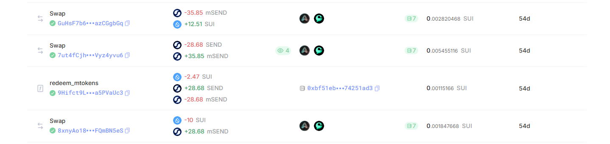

SUIエコシステム上で配布されたエアドロップトークン mSEND は、Suilend の独自トークンであり、専用のRedeem機能を通じて SEND に変換可能でした。 ただし、その際に 一定のSUIをペナルティとして支払う必要があるという仕組みが存在しました。この3つのトークン間の相互作用は複雑であり、価格の歪みが生じやすいと考えました。
数十回の取引により、合計で 約300ドルの利益 を獲得しました。 この戦略はredeem期間が終わったことで現在はエッジが消失していますが、当時は明確な裁定機会として機能していました。
以下は、即時Redeemの際に行ったトランザクション履歴です(※画像下から上に向かって時系列順に並んでいます)

本戦略の自動化も試みました。
SUI Aggregatorを採用しているScallop（https://app.scallop.io/）のSDK を用いて、
mSEND/SUI・SEND/SUIプールの価格をリアルタイムに監視し、裁定機会を自動検出するスクリプトを実装しました。
しかし当時、SUILendのSDKにはmSENDのRedeemに対応するコマンドが存在していなかったため、完全な自動化（取引実行）には至れませんでした。
そのため、最終的な取引はすべて手動で行いましたが、価格差検出やトレードタイミングの最適化においては、 実装したスクリプトが大きな助けとなりました。